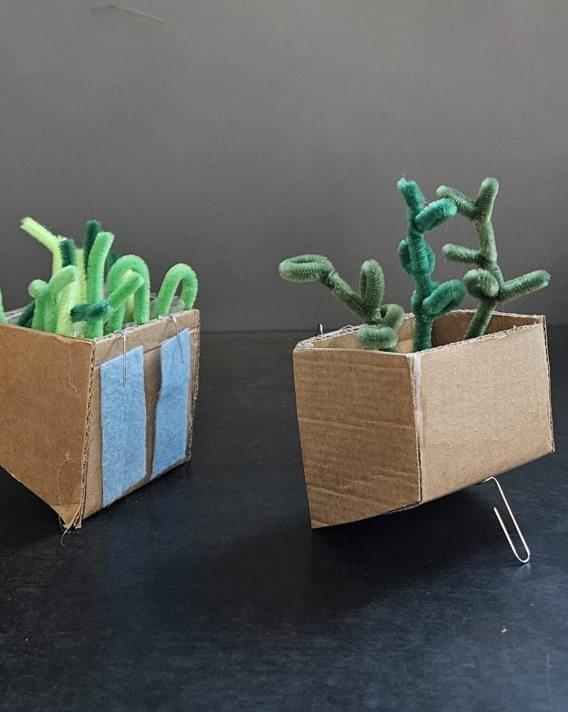
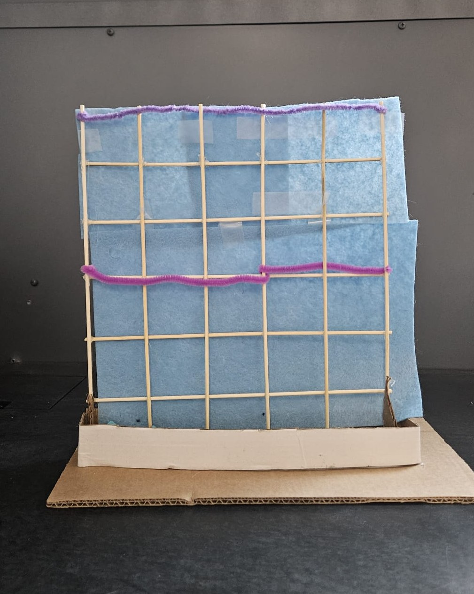
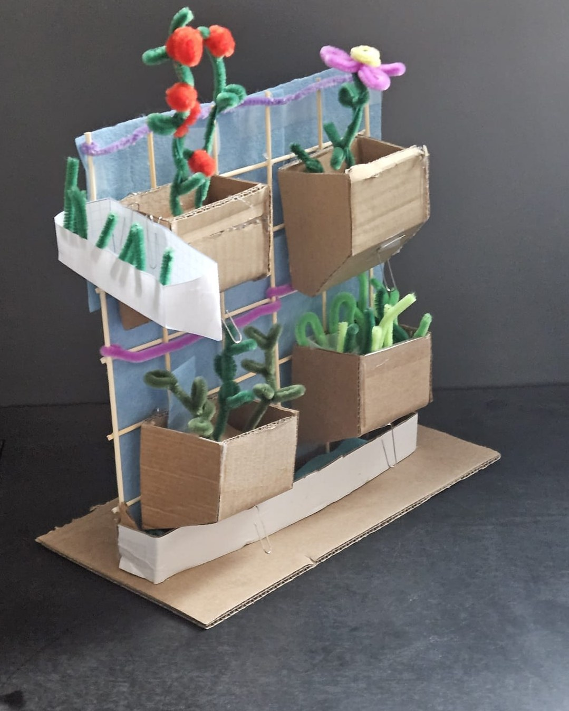
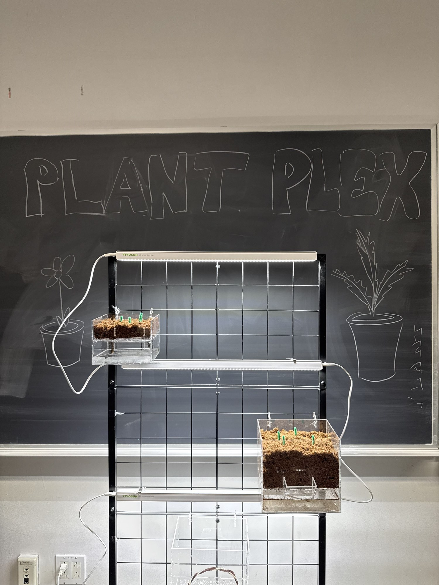

Team project · EID 101-D · Fall 2025
PlantPlex
A freestanding, double-sided grid of removable planter pods that wick water up to the plants by capillary action. We designed it to be self-sufficient and easy for anyone to use, even with no gardening experience, so a small apartment can grow its own produce without a pump.
By Team Forest Green · The Cooper Union

- My role
- Pod, grid and wicking design; built the prototype
- Team
- 7 students
- Timeline
- Sep to Dec 2025
- Tools
- Rapid prototyping, capillary wicking, LED grow lights
Results
What the prototype showed
Self-watering test
A pod kept its soil evenly moist for 72 hours by capillary wicking alone, with no watering and no over-saturation.
water reaches every pod by wicking, so there is nothing to run or repair
removable and double-sided, balanced so a fully loaded grid stays level
of daily value for priority micronutrients, except zinc
floor footprint, 72″ tall: fits in a standard closet
My role
Designing, prototyping and building it
- Designed and prototyped the planter pods, the grid and the wicking system across three iterations
- Built and assembled the working prototype by hand, putting the team’s design together into a freestanding system that wicks water to every pod
- Worked closely with teammates throughout and co-wrote the report
The problem
Little space, little fresh food
Food insecurity is especially hard on city households, where food is mostly imported and space to grow anything is tight. We designed for families of about four living in small apartments, and ranked compactness, modularity and nutrition above everything else, including how much food it produces.
Design goal
Easy enough for someone who’s never gardened
We designed PlantPlex for people with no gardening experience, so the system had to run itself and remove the guesswork at every step.
It waters itself
A wick in each pod draws water up to the soil. In our 72-hour test the soil stayed evenly moist with no daily watering. The only chore is refilling the water by hand.
Nothing to maintain
There’s no pump to buy, run or repair. The only electronics are the detachable LED lights.
No guesswork
A week-by-week plan says what to plant and harvest in each pod, so a beginner never has to work out the timing.
Fits any apartment
It’s freestanding, so there’s nothing to drill or hang. It stands in 24 in × 24 in of floor space.
Design process
Three versions, each fixing the last
1. Proof of concept
A small self-watering microgreen box, 6 in × 2 in × 3 in. It became a trapezoid when lighting was a problem. We ruled out wall, floor and ceiling mounts and chose a self-supported grid that planters hang from.
2. Capillary pods
We added a wicking column in each pod, using the chamfered corner as a water reservoir. We chose manual refills over a pump, which would add noise, energy and water costs and make the parts less modular.
3. Final design
A double-sided grid of 24 removable pods (8 microgreen, 6 spinach, 6 kale, 4 beet), half on each side to balance the weight. Detachable LED lights let it work in any room.





Decisions that changed
What we threw out, and why
- One big capillary mat. It was heavy, always damp and likely to grow mold. Each pod now has its own wick, which also made a double-sided grid possible.
- Hanging from curtain rods. It would block the curtains, cut off daylight, and the rods might not hold the weight. The grid now stands on its own.
- Relying on sunlight. We added detachable LED lights so it works anywhere in a home.

Testing
What we checked
Watering
A soil-only pod held steady moisture for 72 hours without over-saturating, with no daily intervention.
Stability
With every pod on both sides loaded with soil and water, the grid showed no significant tilt or structural stress.
Lighting
We compared published light levels for each crop with our 60 W LED. It should be enough at 6–10 in above the pods for microgreens and 5–8 in for leafy greens and beets.
These tests covered the physical system: watering, stability and lighting. Long-term crop trials were left as the next step.
What it grows
Four crops, chosen for nutrition
The team picked red cabbage microgreens, Savoy spinach, Lacinato kale and Detroit dark red beets to cover the micronutrients people most often lack. The target was over 50% of the daily value for those nutrients (excluding vitamin B12, which only comes from animal foods).
| Priority nutrient | Daily value from one grid rack |
|---|---|
| Vitamin A | 210–250% |
| Folate | 60–90% |
| Iron | 55–75% |
| Calcium | 50–65% |
| Zinc | 25–35% (needs supplementing) |
Team analysis, averaged over a growing cycle for one adult.
Next steps
What we’d do next
- Run long-term trials across several crop cycles and harvests.
- Optimize the lighting and explore automated watering.
- Expand the crop selection and test durability.
Team Forest Green: Rio Ben-Yehoshua, Rue Hu, Will Lang, Tiger Wong Wagner, Yali Afek, Sara Pardomuan, Mike Sovatzoglou. December 2025.